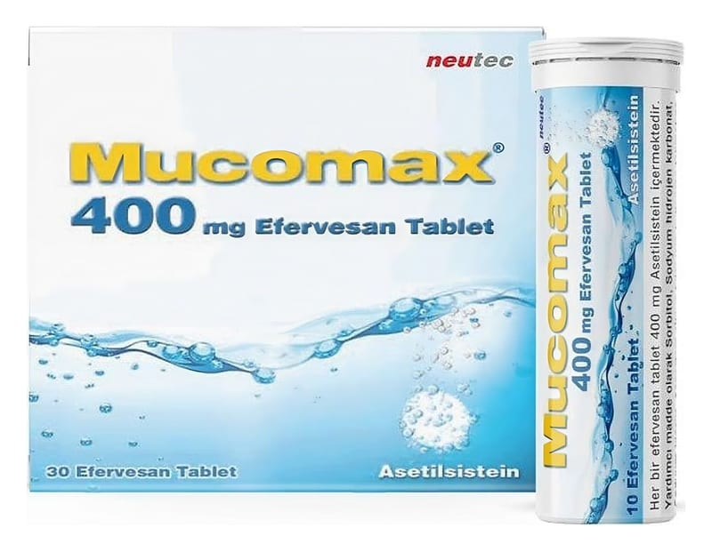

Mucomax 400 mg Efervesan Tablet, 10 Adet

Ne için kullanılır
KT · Bölüm 1MUCOMAX, silikajelli PE kapaklı, PP plastik tüplerde, 10 ve 30 efervesan tablet şeklinde kullanıma sunulmaktadır. Tabletler beyaz renkte ve yuvarlak şekildedir. MUCOMAX
suda tamamen eritildikten sonra içilerek kullanılan bir ilaçtır. MUCOMAX
etkin madde olarak asetilsistein içerir. Asetilsistein, bir amino asit olan sistein türevi bir ajandır. Balgam söktürücü etkiye sahiptir. MUCOMAX yoğun kıvamlı balgamın atılması, azaltılması, yoğunluğunun düzenlenmesi, ekspektorasyonun (balgamın atılabilmesi) kolaylaştırılması gereken durumlarda, bronkopulmoner (bronş ve akciğer) hastalıklarda, bronşiyal sekresyon (solunum yolu salgısı) bozukluklarının tedavisinde kullanılan mukolitik (balgamı, mukusu parçalayan) bir ilaçtır. Ayrıca yüksek doz parasetamol alımına bağlı olarak ortaya çıkan karaciğer yetmezliğinin önlenmesinde kullanılır. MUCOMAX soğuk algınlığı ve solunum yollarının iltihaplanması (bronşit) durumunda balgam oluşmasını azaltır. Oluşan balgamları sulandırarak, öksürükle atılmasını kolaylaştırır.